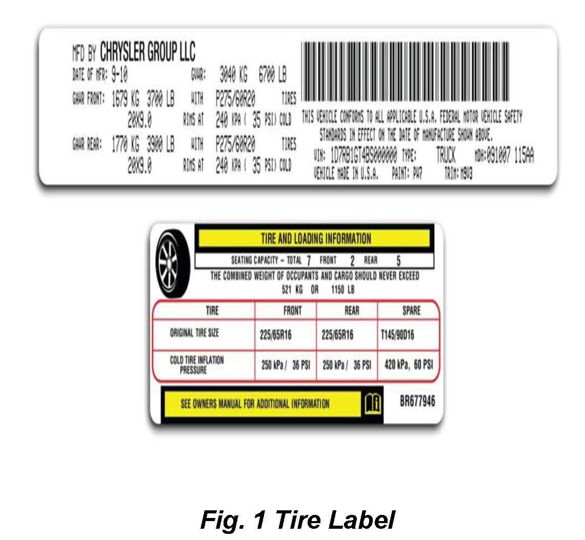

Collision - Safety Cert./Tire Press. Label Replacement
NUMBER: 31-002-12GROUP: Collision Bulletin
DATE: February 02, 2012
SUBJECT:
Safety Certification and Tire Pressure Label Replacement Guidelines
DISCUSSION:

^ Chrysler has chosen ECS Automotive Concepts to manufacture late model original equipment licensed vehicle information labels for the collision repair industry. Replacement of the Safety Certification label and Tire Pressure label allows a collision repair facility to put a car one step closer to pre-loss condition!
POLICY:
Information Only.
Disclaimer:
This bulletin is supplied as technical information only and is not an authorization for repair.